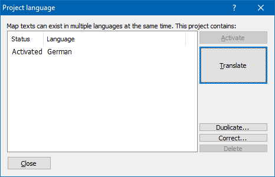

|
The dialog Project language |

  
|
|
The dialog Project language |
|
u Video |

Maps have various description fields in WinOLS. Their texts can be stored not only in one language, but in several. Only one language is active at any time and thus visible in the dialog.
You can manage the languages in this subdialog of the project properties. If the current texts are marked with a wrong language, you can correct this here. If you manually add a new language, it starts by default as a copy of the previously active language. Now you can change texts in the map properties as normal. And change the active language afterwards. You can do this in the project properties and also in the sidebar menu. The tooltip of the map always shows all languages.
If you have licensed the plugin OLS540, you can have all texts translated automatically from German to English.
Shortcuts
| Symbol bar: | - |
| Keyboard: | - |